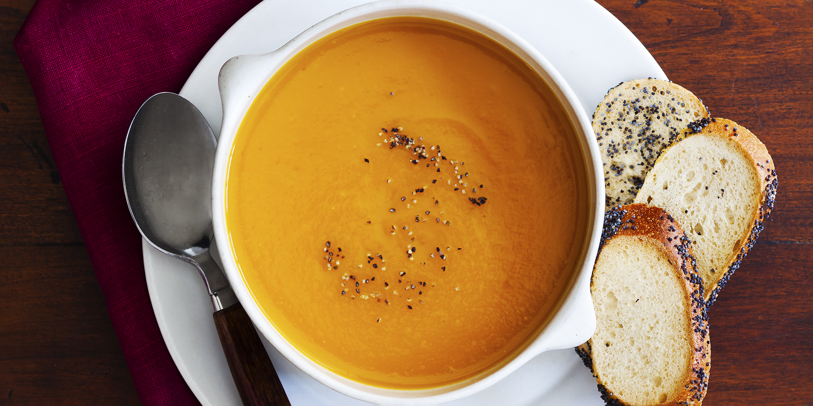

Butternut Squash Soup

Description
This is a great soup for autumn!
Ingredients
- 2 tablespoons butter
- 1 small onion, chopped
- 1 stalk celery, chopped
- 1 medium carrot, chopped
- 2 medium potatoes, cubed
- 1 medium butternut squash - peeled, seeded, and cubed
- 1 (32 fluid ounce) container chicken stock
- salt and freshly ground black pepper to taste
Steps
- Melt the butter in a large pot, and cook the onion, celery, carrot, potatoes, and squash 5 minutes, or until lightly browned. Pour in enough of the chicken stock to cover vegetables. Bring to a boil. Reduce heat to low, cover pot, and simmer 40 minutes, or until all vegetables are tender.
- Transfer the soup to a blender, and blend until smooth. Return to pot, and mix in any remaining stock to attain desired consistency. Season with salt and pepper.